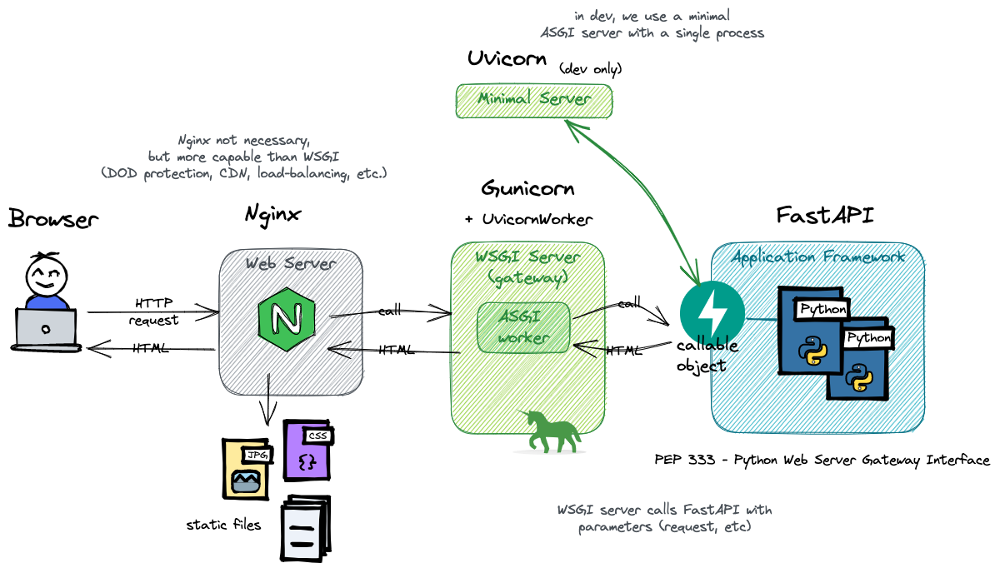

FastAPI¶
FastAPI is:
a modern, fast (high-performance), web framework for building APIs with Python 3.7+ based on standard Python type hints.
Their documentation is amazing (way better than this one), so please check it out!
About WSGI and ASGI¶
It is important to understand that FastAPI is an ASGI Application Framework. It cannot serve anything by itself: it needs an ASGI Server (or a WSGI server with an ASGI worker).
WSGI stands for Web Server Gateway Interface, and ASGI for Asynchronous Server Gateway interface. They both specify an interface that sits in between a web server and a Python web application or framework. WSGI has been around for a long time. ASGI is a spiritual successor to WSGI, that is able to handle asynchronous requests and responses.
In short, an (A|W)SGI Server is a web server that is able to call python code when it receives an HTTP request. The way it calls this code, and what parameters are passed to the calling function, are all specified in the (A|W)SGI interface specification. It includes information about the request and the environment.
It is then the role of the (A|W)SGI Application to build the headers and to return the data as iterable.
This is done using the start_response call. Here is a simple WSGI application
(source):
def simple_app(environ, start_response):
status = '200 OK'
response_headers = [('Content-type','text/plain')]
# Actually start sending data back to the server
start_response('200 OK', response_headers)
return ['Hello world!\n']
This simple_app can then be passed to a server and be served as is.
Of course, apps are usually way more complex, with routing, proxies and complex logic involved. This is why we use (A|W)SGI Application Frameworks such as FastAPI. Those frameworks have a single entry point (that is called by the server), and lots of conveniences to abstract the complexities of constructing responses, handling errors, doing redirects, determining which code to execute, etc.

To actually run a FastAPI app, we thus need an ASGI server (or a WSGI server with an ASGI-compatible worker). In development, we can use uvicorn - a minimalist server with a single process.
While a single process is enough for testing, it is not suitable for production. The most common production setup for FastAPI is gunicorn with uvicorn workers, sitting behind a reverse proxy such as Nginx.
Why the reverse proxy you ask? Gunicorn is amazing at handling workers and WSGI-specific things, while NGINX is a full-featured HTTP server, able to handle millions of concurrent connections, provide DoD protection, rewrite headers, and serve static resources more effectively. Together, they form the perfect team.
See also: The Layered World Of Web Development: Why I Need NGINX And UWSGI To Run A Python App?
Install FastAPI + uvicorn¶
Anyway, to get started, we only need to install both FastAPI and uvicorn:
poetry add fastapi
poetry add 'uvicorn[standard]'
The uvicorn server can then be launched (with reload!) using:
uvicorn package.filename:app_object --reload
Getting started¶
Create a file fastapi_celery/main.py and add:
from fastapi import FastAPI
from typing import Dict
app = FastAPI() # <- the ASGI entrypoint
@app.get('/')
def index() -> Dict:
return {'greating': 'hello'}
Run uvicorn with reload:
uvicorn fastapi_celery.main:app --reload
Note
It is also possible to run uvicorn directly from the python file, to allow for debugging:
import uvicorn
if __name__ == "__main__":
uvicorn.run(app, host="0.0.0.0", port=8000)
If you use reload=True, however, you have to pass the app as an import string,
in our case celery_fastapi.main:app.
and try it using:
curl http://localhost:8000/
Congrats! You have successfully coded a REST API.
Now, open the following in your browser: http://localhost:8000/docs.
FastAPI comes built-in with a Swagger UI
the OpenApi specification for us based on type hints.
Want more? FastAPI also comes with a ReDoc
documentation: http://localhost:8000/redoc!
In short, you get those endpoints for free:
/docs→ Interactive API docs (Swagger UI)/redoc→ Alternative API docs (ReDoc documentation)/openapi.json→ OpenAPI spec (JSON document)
A simple example¶
Let's imagine we want an endpoint to create a new user. Let's start with the most basic thing, we'll improve later.
from fastAPI import FastAPI
from typing import Any
from datetime import datetime
app = FastAPI
@app.get("/")
def create_user() -> dict[str, Any]:
return {"id": 10, "name": "my-username", "created_at": datetime.now()}
Now, looking at the docs, there is not much detail. Let's make it better!
Documentation¶
We can easily add some description for the endpoint using either a docstring,
or the description parameter on the annotation. The annotation also lets us
describe the response type. Both support markdown!
@app.get('/', response_description="The `new` user")
def create_user() -> dict[str, Any]:
"""
Create a new user. *Supports `markdown`!*
"""
For more documentation options:
- Metadata and Docs URLs for general information,
- Path Operation Configuration for endpoint annotations,
- Declare Request Example Data for extra schema samples.
FastAPI allows describing pretty much anything, and to customize all the fields that will appear in the OpenAPI spec. From now on, always look at the parameters offered by FastAPI classes .
Model class¶
The return type being a dictionary, FastAPI cannot give much detail, nor do any validation. Let's change this by using a pydantic model.
First, install pydantic:
poetry add pydantic
And change the code to:
from fastapi import FastAPI
from pydantic import BaseModel
from datetime import datetime
from random import randint
app = FastAPI()
class UserOut(BaseModel):
id: int = randint(1, 100)
name: str
creation_date: datetime = datetime.now()
@app.get('/')
def create_user() -> UserOut:
return UserOut(name="lucy")
Have a look at the successful response example in the docs. Isn't it great?
Query parameters¶
The name is still hard-coded. Why not use a query parameter instead?
@app.get("/")
def create_user(name: str) -> UserOut:
return UserOut(name=name)
Since name doesn't have a default, it is marked as required in the interface,
and omitting it will throw an error.
A name, though usually has more than one letter, right? So let's add some validation.
For this, we can use the brand new feature of FastAPI 0.95.0: the support for
typing.Annotated!
from fastapi import FastAPI, Query
from typing import Annotated
# ...
@app.get("/")
def create_user(name: Annotated[str, Query(min_length=3)]) -> UserOut:
return UserOut(name=name)
Annotated is here to decorate existing types with context-specific data.
Its first argument is always the final type, followed by varyadic arguments.
Those metadata arguments are then used by other tools, in our case FastAPI.
The Query object is a simple decorator offered by FastAPI that allows
adding constraints to a query parameter. I will let you dive into the capabilities
of Query on your own!
Path parameters¶
Let's say, for some reason, you want the name to become a path parameter. Suffice to change the path in the annotation:
@app.get("/{name}")
If you are using simple parameters (name: str), all is fine. If you have some
constraints, though, you need to change the Query from the last example
with Path. The logic, however, stays the same:
@app.get("/{name}")
def create_user(name: Annotated[str, Path(min_length=3)]) -> UserOut:
return UserOut(name=name)
Body parameters¶
Using a get to create a user is ugly. Furthermore, we may want to have more information from the user such as a password. Let's fix this!
from fastapi import FastAPI
from pydantic import BaseModel, Field
from datetime import datetime
from random import randint
from typing import Annotated
app = FastAPI()
class UserIn(BaseModel):
name: Annotated[str, Field(example="my-username", min_length=3, regex="^[a-z-]+$")]
password: Annotated[str, Field(example="secret", min_length=5)]
class UserOut(BaseModel):
id: int = randint(1, 100)
name: str
creation_date: datetime = datetime.now()
@app.post("/")
def create_user(user: UserIn) -> UserOut:
# return user <- would work as well... Try it!
return UserOut(**user.dict())
As you can see, we can use Field on the properties of a pydantic model as we
do with Query and Path. Most of the properties are the same!
The type hints are enough for FastAPI to provide validation, proper documentation, and IDE support.
More interestingly, FastAPI/pydantic takes care of the "views". What do I mean by that?
Try returning the input user directly (return user). We would expect to see username
and password in the results, right? No! FastAPI ensures that what is returned matches
the response model. Any extra properties are gone. There is no way the password will show
up in the response.
This allows for a flexible and elegant class hierarchy.
Even cooler, we can fine-tune what is returned using response_model_exclude_none
or response_model_exclude_unset in the @app.post() annotation.
If set to true, None values or default values won't be returned, respectively.
Have a look at all the other options, they are interesting !
Exceptions¶
If something goes wrong, simply raise an HTTPException class:
from fastapi import FastAPI, HTTPException
app = FastAPI()
@app.get('/error')
def error():
raise HTTPException(status_code=500, detail="Just throwing an internal server error")
Just try it:
curl http://localhost:8000/error -v
# < HTTP/1.1 500 Internal Server Error
# {"detail":"Just throwing an internal server error"}
Note that the detail can be of any type, not just string. As long as it is JSON-serializable!
It is also possible to specify headers.
Status code¶
Since our method creates a user, it would be better to return a 201 - Created instead of a
200 - OK. Again, no need to look further, just specify the status_code parameter!
@app.post("/", status_code=201)
Other awesome features¶
- You can add examples and example schemas that will show up in the UI at all levels. Even better, you can have multiple examples for a body, and the UI will show you a dropdown you can choose from!
- FastAPI supports lots of types out-of-the-box!
By supporting, I mean automatic parsing and validation .
The pydantic types are especially useful.
Some examples:
EmailStr,Color,FilePath,PastDate,HttpUrl,SecretStr(won't be logged), etc. - The body can be composed: if we add multiple models as parameters, FastAPI will merge them together.
For example, declaring:
will expect an input like this:
def some_post(admin_user: User, regular_user: User):This avoids the necessity to create extra classes just for composition!{"admin_user": {}, "regular_user": {}} - Model classes based on pydantic's
BaseModel, which has lots of awesome features. For example, the methods.dict(),.json()and.copy()come out-of-the-box, and support including, excluding and renaming fields (among other). More info here. - To avoid hard-coding HTTP status codes, use FastAPI's
status.HTTP_*constants. - The
json_encoder()will convert dict, pydantic models, etc. into valid JSON, a bit likejson.dumps. But contrary to the latter, the result is not a string, but a dictionary with all values compatible with JSON (think ofdatetimeobjects). - For bigger applications, FastAPI uses
APIRouter, which is equivalent to blueprints in Flask. For more information, read Bigger Applications - Multiple Files. - FastAPI has a very powerful but intuitive Dependency Injection system (DI). This can be used to have shared logic, share database connections, enforce security (e.g. checking the presence of a valid JWT token), etc. See Dependencies - First Steps.
And so much more!